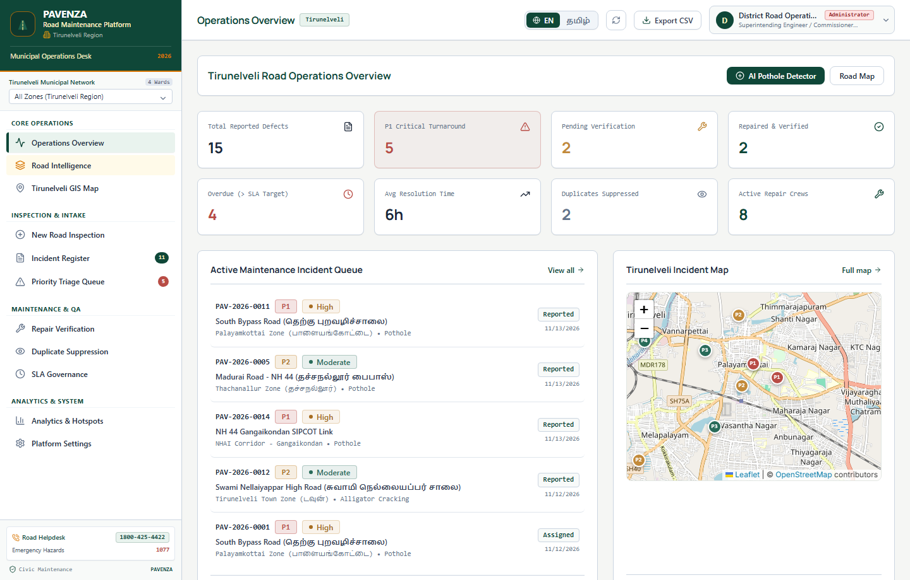

PAVENZA
ROAD DEFECT AI.
An AI-powered civic road maintenance platform detecting potholes, alligator cracks, and base failures via YOLOv8 computer vision — featuring interactive repair verification sliders, Tirunelveli ward-level GIS heatmaps, and automated SLA priority triage.

AI-GROUNDED CIVIC ROAD INFRASTRUCTURE MONITORING.
Municipal road auditing typically relies on slow citizen complaints or manual inspections. PAVENZA accelerates urban road maintenance by automating deep-learning defect identification, estimating severity indices, and enforcing verifiable contractor repair SLAs.
YOLOv8 Defect Detector
Analyzes uploaded road imagery to detect potholes, longitudinal cracks, and alligator fatigue zones with bounding-box confidence scores.
Interactive Repair Slider
Visual before/after split slider allowing municipal engineers to verify contractor patch repairs against original defect photos.
Tirunelveli GIS Heatmap
Geospatial coordinate mapping with clustering and severity-weighted heat layers across urban ward boundaries.
Civic SLA Triage Queue
Calculates priority scores from traffic density, defect depth, and weather risk to route work orders before monsoon degradation.
Duplicate Suppression
Spatial radius matching and perceptual image similarity prevent redundant complaints for identical road potholes.
Bilingual Tamil Interface
Localized Tamil & English UI enabling grassroots civic field workers to register complaints and log repairs seamlessly.
HOW IT WORKS.
High-throughput OpenCV and YOLOv8 inference pipeline backed by FastAPI and React 19.
Ingest Imagery
Mobile citizen upload or dashcam batch via multipart API.
CV Inference
YOLOv8 detects defect classes, dimensions & confidence.
Geospatial Triage
Leaflet GIS binds coordinates to municipal ward polygons.
Repair Verification
Contractor after-photo verified via visual diff slider.
SLA Resolution
Closed defect logged to immutable public audit ledger.
APPLICATION SCREENSHOTS.
Live screens captured from the running application. Click any image to view full size, or follow setup instructions in the GitHub repository.
PLATFORM CAPABILITIES & VERIFIED SPECS.
Key modules, rules, safety checks, and automated test results documented in the repository.
| Subsystem | Technical Implementation | Verified Capability |
|---|---|---|
| Computer Vision Engine | YOLOv8 + OpenCV Preprocessing | Multi-class pothole & crack detection |
| Geospatial Telemetry | Leaflet GIS + Ward Polygons | Real-time spatial clustering & heatmap |
| Repair Verification | Canvas Split Slider + Image Alignment | Sub-pixel contractor repair validation |
| Backend Architecture | FastAPI + Pytest Verification Suite | 23 / 23 automated tests passed |
CORE TECHNOLOGIES.
Frameworks, databases, visualization tools, and testing libraries used in PAVENZA.
FUTURE ENHANCEMENTS.
Upcoming improvements planned for PAVENZA.
EXPLORE SOURCE & DOCS.
View the complete codebase, sample datasets, quick-launch scripts, and automated test suites on GitHub.